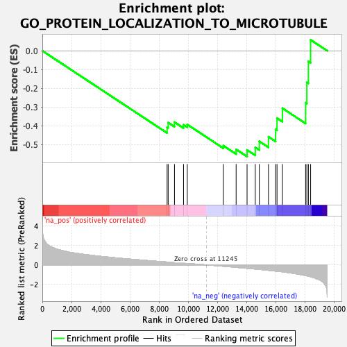

| | | Dataset | Recurrence |
| Phenotype | NoPhenotypeAvailable |
| Upregulated in class | na_neg |
| GeneSet | GO_PROTEIN_LOCALIZATION_TO_MICROTUBULE |
| Enrichment Score (ES) | -0.5639867 |
| Normalized Enrichment Score (NES) | -1.8441552 |
| Nominal p-value | 0.003012048 |
| FDR q-value | 0.2543568 |
| FWER p-Value | 0.989 |
Table: GSEA Results Summary

Fig 1: Enrichment plot: GO_PROTEIN_LOCALIZATION_TO_MICROTUBULE
Profile of the Running ES Score & Positions of GeneSet Members on the Rank Ordered List
Fig 2: GO_PROTEIN_LOCALIZATION_TO_MICROTUBULE: Random ES distribution
Gene set null distribution of ES for GO_PROTEIN_LOCALIZATION_TO_MICROTUBULE